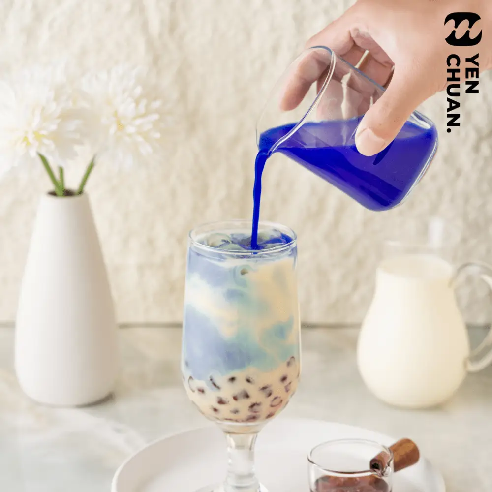
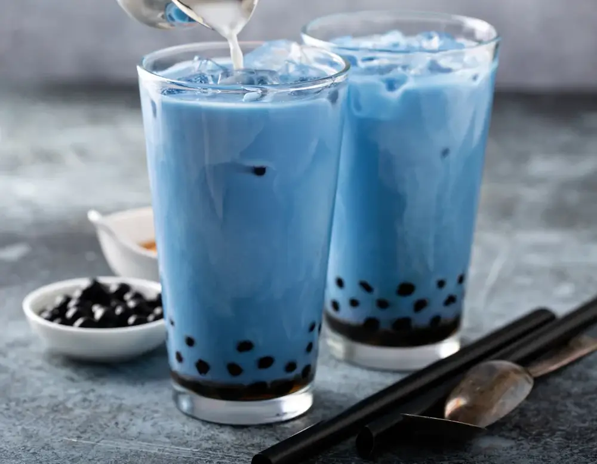
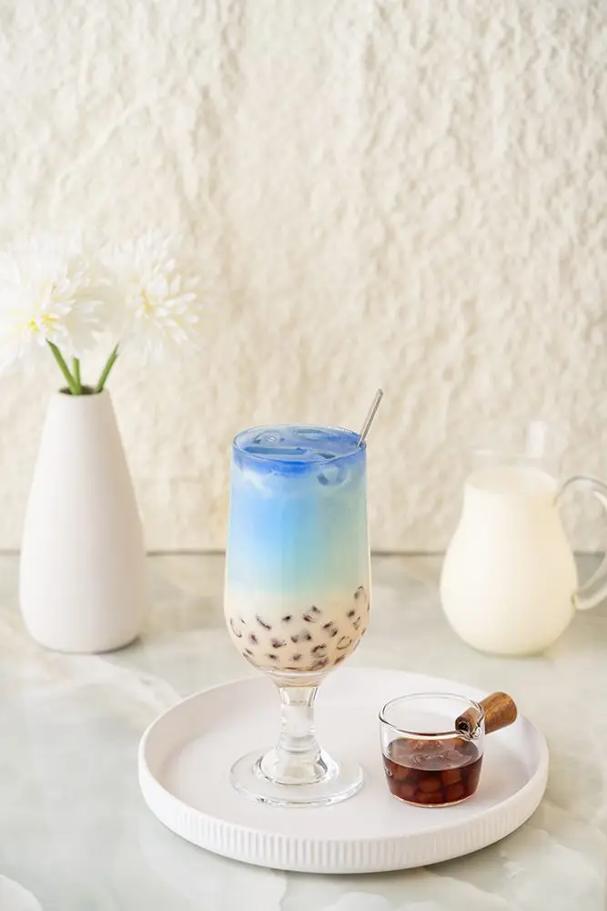

文章 / 飲品配方與資訊
Spring of Colours – Make ombre boba milk tea!
這篇是英文原文，尚未完成繁體中文翻譯。中文選單與相關商品連結不會切回英文介面。

查看英文原文（尚未翻譯）
Can’t get enough of colourful drinks to celebrate springtime? Why not make some ombre boba milk tea?
Learn how to make it by reading on!
What is ombre powder?
Our ombre powder magically changes colour depending on the liquid it’s mixed with.
Try mixing with different fruit juice for a colourful fruit punch, or with other drinks for a unique spin on said drink!
Why ombre boba milk?
We’re all familiar with brown sugar boba milk: Fresh milk with streaks of brown sugar syrup, garnished with chewy boba.
What if we say boba milk can be more than just brown? Blue, perhaps?
By mixing the ombre powder with fresh milk, we create a vibrant, memorable blue colour. With a generous layer of milk foam on top, a simple glass of boba milk is transformed into a snapshot of the seashore!
Here’s how it’s done:


Ombre boba milk tea
With a beautiful blue-white gradient, this drink captures the beauty of the big blue sea. Can’t wait to skip to summertime? One sip would transport you to the beach shore!
What you’ll need
How to make
First, blend the cream top powder with some fresh milk and cream. Set aside
Mix the ombre powder with milk, the colour should change to blue
Add the ice cubes and tapioca pearls to the cup, then pour in the milk from step 2.
Finally, add the cream top
To garnish, finish off by adding seashell-shaped cookies for the seaside look!
Bobalicious!
Want to give this unique drink a try? Pick up the powder to get started.
Contact us to learn more!